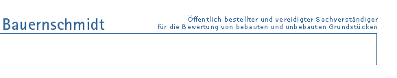
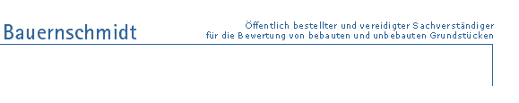

Impressum
Norbert Bauernschmidt
Öffentlich bestellter und vereidigter Sachverständiger für
die Bewertung von bebauten und unbebauten Grundstücken
Adolph-Kolping Straße 10
91217 Hersbruck
T. 09151-3048
F. 09151-3043
norbert.bauernschmidt@t-online.de
Steuernummer 221/203/00478
Datenschutzerklärung
Verantwortliche Stelle im Sinne der Datenschutzgesetze, insbesondere der EU-Datenschutzgrundverordnung (DSGVO), ist: Norbert Bauernschmidt
Ihre Betroffenenrechte
Unter den angegebenen Kontaktdaten unseres Datenschutzbeauftragten können Sie jederzeit folgende Rechte ausüben:
- Auskunft über Ihre bei uns gespeicherten Daten und deren Verarbeitung,
- Berichtigung unrichtiger personenbezogener Daten,
- Löschung Ihrer bei uns gespeicherten Daten,
- Einschränkung der Datenverarbeitung, sofern wir Ihre Daten aufgrund gesetzlicher Pflichten noch nicht löschen dürfen,
- Widerspruch gegen die Verarbeitung Ihrer Daten bei uns und
- Datenübertragbarkeit, sofern Sie in die Datenverarbeitung eingewilligt haben oder einen Vertrag mit uns abgeschlossen haben.
Sofern Sie uns eine Einwilligung erteilt haben, können Sie diese jederzeit mit Wirkung für die Zukunft widerrufen.
Sie können sich jederzeit mit einer Beschwerde an die für Sie zuständige Aufsichtsbehörde wenden. Ihre zuständige Aufsichtsbehörde richtet sich nach dem Bundesland Ihres Wohnsitzes, Ihrer Arbeit oder der mutmaßlichen Verletzung. Eine Liste der Aufsichtsbehörden (für den nichtöffentlichen Bereich) mit Anschrift finden Sie unter: https://www.bfdi.bund.de/DE/Infothek/Anschriften_Links/anschriften_links-node.html.
Zwecke der Datenverarbeitung durch die verantwortliche Stelle und Dritte
Wir verarbeiten Ihre personenbezogenen Daten nur zu den in dieser Datenschutzerklärung genannten Zwecken. Eine Übermittlung Ihrer persönlichen Daten an Dritte zu anderen als den genannten Zwecken findet nicht statt. Wir geben Ihre persönlichen Daten nur an Dritte weiter, wenn:
- Sie Ihre ausdrückliche Einwilligung dazu erteilt haben,
- die Verarbeitung zur Abwicklung eines Vertrags mit Ihnen erforderlich ist,
- die Verarbeitung zur Erfüllung einer rechtlichen Verpflichtung erforderlich ist,
die Verarbeitung zur Wahrung berechtigter Interessen erforderlich ist und kein Grund zur Annahme besteht, dass Sie ein überwiegendes schutzwürdiges Interesse an der Nichtweitergabe Ihrer Daten haben.
Löschung bzw. Sperrung der Daten
Wir halten uns an die Grundsätze der Datenvermeidung und Datensparsamkeit. Wir speichern Ihre personenbezogenen Daten daher nur so lange, wie dies zur Erreichung der hier genannten Zwecke erforderlich ist oder wie es die vom Gesetzgeber vorgesehenen vielfältigen Speicherfristen vorsehen. Nach Fortfall des jeweiligen Zweckes bzw. Ablauf dieser Fristen werden die entsprechenden Daten routinemäßig und entsprechend den gesetzlichen Vorschriften gesperrt oder gelöscht.
Erfassung allgemeiner Informationen beim Besuch unserer Website
Wenn Sie auf unsere Website zugreifen, werden automatisch mittels eines Cookies Informationen allgemeiner Natur erfasst. Diese Informationen (Server-Logfiles) beinhalten etwa die Art des Webbrowsers, das verwendete Betriebssystem, den Domainnamen Ihres Internet-Service-Providers und ähnliches. Hierbei handelt es sich ausschließlich um Informationen, welche keine Rückschlüsse auf Ihre Person zulassen.
Diese Informationen sind technisch notwendig, um von Ihnen angeforderte Inhalte von Webseiten korrekt auszuliefern und fallen bei Nutzung des Internets zwingend an. Sie werden insbesondere zu folgenden Zwecken verarbeitet:
- Sicherstellung eines problemlosen Verbindungsaufbaus der Website,
- Sicherstellung einer reibungslosen Nutzung unserer Website,
- Auswertung der Systemsicherheit und -stabilität sowie
- zu weiteren administrativen Zwecken.
Die Verarbeitung Ihrer personenbezogenen Daten basiert auf unserem berechtigten Interesse aus den vorgenannten Zwecken zur Datenerhebung. Wir verwenden Ihre Daten nicht, um Rückschlüsse auf Ihre Person zu ziehen. Empfänger der Daten sind nur die verantwortliche Stelle und ggf. Auftragsverarbeiter.
Anonyme Informationen dieser Art werden von uns ggfs. statistisch ausgewertet, um unseren Internetauftritt und die dahinterstehende Technik zu optimieren.
SSL-Verschlüsselung
Um die Sicherheit Ihrer Daten bei der Übertragung zu schützen, verwenden wir dem aktuellen Stand der Technik entsprechende Verschlüsselungsverfahren (z. B. SSL) über HTTPS.
Kontaktformular
Treten Sie bzgl. Fragen jeglicher Art per E-Mail oder Kontaktformular mit uns in Kontakt, erteilen Sie uns zum Zwecke der Kontaktaufnahme Ihre freiwillige Einwilligung. Hierfür ist die Angabe einer validen E-Mail-Adresse erforderlich. Diese dient der Zuordnung der Anfrage und der anschließenden Beantwortung derselben. Die Angabe weiterer Daten ist optional. Die von Ihnen gemachten Angaben werden zum Zwecke der Bearbeitung der Anfrage sowie für mögliche Anschlussfragen gespeichert. Nach Erledigung der von Ihnen gestellten Anfrage werden personenbezogene Daten automatisch gelöscht.
Änderung unserer Datenschutzbestimmungen
Wir behalten uns vor, diese Datenschutzerklärung anzupassen, damit sie stets den aktuellen rechtlichen Anforderungen entspricht oder um Änderungen unserer Leistungen in der Datenschutzerklärung umzusetzen, z.B. bei der Einführung neuer Services. Für Ihren erneuten Besuch gilt dann die neue Datenschutzerklärung.
Fragen an den Datenschutzbeauftragten
Wenn Sie Fragen zum Datenschutz haben, schreiben Sie uns bitte eine E-Mail oder wenden Sie sich direkt an die für den Datenschutz verantwortliche Person in unserer Organisation:
Die Datenschutzerklärung wurde mit dem Datenschutzerklärungs-Generator der activeMind AG erstellt.